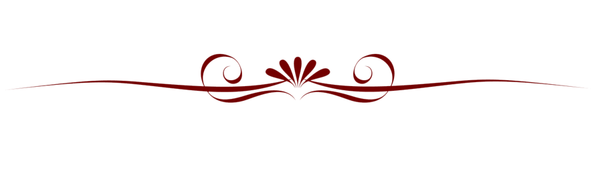

Nel 1954 il presidente del Barcellona, Francesc Miró-Sans, decise che era arrivato il momento di costruire un nuovo impianto, così da lasciare il vecchio Camp de Les Corts, che non poteva essere ampliato, e nello stesso tempo rispondere al Real Madrid, che da poco aveva eretto lo stadio Santiago Bernabéu. Il progetto, realizzato dagli architetti Francesc Mitjans, Lorenzo García-Barbón e Josep Soteras, costò al Barcellona 288 milioni di pesetas.
Nel 1954 il presidente del Barcellona, Francesc Miró-Sans, decise che era arrivato il momento di costruire un nuovo impianto, così da lasciare il vecchio Camp de Les Corts, che non poteva essere ampliato, e nello stesso tempo rispondere al Real Madrid, che da poco aveva eretto lo stadio Santiago Bernabéu. Il progetto, realizzato dagli architetti Francesc Mitjans, Lorenzo García-Barbón e Josep Soteras, costò al Barcellona 288 milioni di pesetas.La posa della prima pietra dell'Estadi del FC Barcelona, che da subito iniziò a essere denominato Camp Nou, avvenne il 28 marzo 1954. I lavori di costruzione durarono fino al 1957, mentre lo stadio venne inaugurato il 24 settembre dello stesso anno: per l'occasione fu organizzata un'amichevole contro il Legia Varsavia, terminata con il risultato di 4-2 in favore del Barcellona, con Eulogio Martínez autore del primo gol nel nuovo impianto. Inizialmente era previsto che il nuovo stadio portasse il nome del fondatore del club Hans Gamper, ma vista l'opposizione di molte autorità dell'epoca, la giunta direttiva optò per Estadi del Futbol Club Barcelona.
Il 24 maggio 1972 il Camp Nou ospitò la finale della Coppa delle Coppe 1971-1972, vinta per 3-2 dai Rangers contro la Dinamo Mosca. Nel 1975 nello stadio furono installati i tabelloni elettronici. Nel 1980 l'impianto subì una serie di lavori di ampliamento in vista del campionato mondiale di calcio del 1982 da disputarsi in Spagna: furono inserite le logge VIP, una nuova sala stampa, nuovi tabelloni e fu edificato il terzo anello (di dimensioni più contenute rispetto all'iniziale progetto, essendo alto 46,6 metri anziché 52,5), che aggiunse altri 22 150 posti,portando la capienza a 71 731 posti a sedere, mentre la capienza di posti in piedi fu aumentata di altri 16 500 posti, portandola a 49 670, per una capacità totale di 121 401 posti.
Il 12 maggio 1982 il Barcellona sconfisse per 2-1 al Camp Nou lo Standard Liegi nella finale della Coppa delle Coppe 1981-1982. Il 13 giugno 1982 il Camp Nou ospitò l'inaugurazione del Mondiale di Spagna e la prima partita del torneo (Belgio-Argentina 1-0 di fronte a 95 000 spettatori). Nei giorni successivi si svolsero nell'impianto altre tre partite della fase a gironi e la semifinale Italia-Polonia (2-0). Nel 1984 fu inaugurato presso lo stadio un museo del FC Barcelona. Il 5 marzo 1986, in occasione di Barcellona-Juventus, valida per i quarti di finale della Coppa dei Campioni, lo stadio fu gremito da 120 000 spettatori, record di affluenza nell'impianto (nella circostanza furono solo 1 401 i posti rimasti liberi). Il 24 maggio 1989 si tenne al Camp Nou la finale della Coppa dei Campioni 1988-1989, vinta per 4-0 dal Milan contro la Steaua Bucarest, mentre nel 1992 vi si tennero vari match dell'Olimpiade di Barcellona, tra cui la finale vinta dalla Spagna contro la Polonia. In preparazione agli incontri olimpici, furono installati due altri anelli di posti a sedere sul precedente tetto dello stadio.
Tra il 1993 e il 1994 lo stadio subì un'importante opera di ristrutturazione: il terreno di gioco fu abbassato di 2,5 metri, fu rimosso il fossato di sicurezza che separava il campo dagli spalti e furono progressivamente eliminati i posti in piedi, che fecero spazio a soli posti a sedere. Nel 1998 furono apportate altre migliorie: la creazione di una nuova sala stampa, l'ammodernamento dei box e della tribuna presidenziali, la realizzazione di un nuovo parcheggio posto sotto la tribuna principale e l'installazione di nuovi riflettori e di un nuovo impianto audio. Nel 1999, con le nuove normative UEFA, lo stadio divenne dotato di soli posti a sedere. Il 26 maggio 1999 al Camp Nou si tenne la finale della UEFA Champions League 1998-1999, vinta per 2-1 dal Manchester Utd contro il Bayern Monaco. Nel 2000, durante la presidenza di Joan Gaspart, un referendum indetto tra i soci del club decise di cambiare ufficialmente il nome dello stadio in Camp Nou, denominazione che ricevette 19 861 voti, pari al 68,25% dei 29 102 voti totali, e fu preferita a Estadi del Futbol Club Barcelona. Nel settembre 2007 l'architetto inglese Norman Foster e la sua società vennero scelti per ristrutturare l'impianto catalano. Il progetto di Foster avrebbe portato la capienza a 105 000 spettatori; inoltre, la ristrutturazione avrebbe riguardato la facciata esterna dell'impianto, i parcheggi sotterranei, gli spogliatoi e la tribuna autorità. I lavori sarebbero dovuti iniziare nel 2009 e terminare nella stagione 2011-12; tuttavia l'opposizione di Sandro Rosell (eletto presidente nel 2010) alla vendita del Mini Estadi, che avrebbe dovuto finanziare l'opera di ristrutturazione, bloccò tutto il progetto.
Nel gennaio 2014 è stato presentato un nuovo piano di ampliamento dello stadio; i lavori sarebbero dovuti iniziare nel 2017 e terminare all'inizio del 2021. Nel 2015 è stata presentata una versione ridefinita del progetto, i cui lavori dovrebbero cominciare nell'estate del 2020 ed essere completati nel 2024. Il 15 marzo 2022, è stato annunciato che il servizio di streaming musicale Spotify ha raggiunto un accordo con il FC Barcelona per acquisire i diritti di denominazione dello stadio in un affare del valore di 310 milioni di euro. Lo stadio sarà ribattezzato Spotify Camp Nou nel luglio 2022, dopo l'approvazione dell'accordo di sponsorizzazione con Spotify da parte dell'assemblea straordinaria dei delegati del FC Barcelona il 3 aprile 2022.